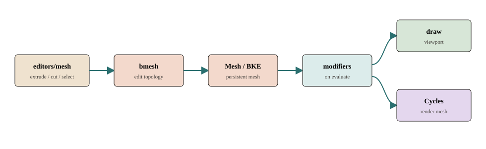

Q001–050 · 模块
源码目录怎么切
对齐 source/blender/CMakeLists.txt 与 intern/cycles。问的是「谁负责、谁不负责」，不是把每个 .cc 列一遍。

001002003004005 006007008009010 011012013014015 016017018019020 021022023024025 026027028029030 031032033034035 036037038039040 041042043044045 046047048049050
数据与文件
001 makesdna 是模块还是「场景格式」？
002 为什么 Mesh 要从 ID 开头？
每个可存盘数据块带 ID 头：名字前两字节是类型码（网格是 ID_ME）、用户计数 us、recalc、properties。blenkernel 用同一套 ID 生命周期管 Mesh / Object / Scene。
没有 ID 头就无法进 Main、无法被其它块引用、也无法走 depsgraph 的「按 ID 标脏」。
DNA_mesh_types.h · DNA_ID.h · makesdna
003 makesrna 为什么单独成模块，不跟 DNA 写在一起？
004 blenkernel 和 makesdna 谁才是「运行时对象」？
DNA 只描述布局。创建、拷贝、释放、命名、用户计数、Mesh/Object 核心逻辑在 blenkernel 的 BKE_*。编辑器和修改器改数据，最后多半落到这里。
读源码时：看到 DNA_object_types.h 是字段；看到 BKE_object.hh 才是行为。
source/blender/blenkernel/ · blenkernel
005 打开 .blend 是谁的工作？
blenloader 把 DNA 结构读写为文件。BLO_read_from_file → 读 DNA1 → 按 SDNA 比较标志重建结构 → 得到 Main。版本字段对不上就 DNA_struct_reconstruct。
它不建视口、不算修改器。打开文件 ≠ 加载一棵已求值的场景。
BLO_read_from_file · blenloader
006 Main 是什么，和 Scene 有何不同？
Main 是进程里全部 ID 的数据库（按类型串起来的链表）。Scene 只是其中一块：帧范围、渲染设置、当前 View Layer 指针。一个文件可以有多个 Scene，但只有一份 Main。
Operator 用 CTX_data_main 拿数据库，用 CTX_data_scene 拿「用户正在看的那一幕」。
CTX_data_main · blenkernel
007 Object.data 指向谁，这个指针属于哪一层？
008 为什么运行时指针可以不进 DNA？
MeshRuntime *runtime 明确不存盘，里面才挂 edit_mesh（BMesh）。存盘只保数组网格。进编辑模式是一次格式转换，不是多写一套文件字段。
设计意图：文件稳定、编辑结构可以换实现。旧版本打开仍能重建 Mesh，再按需建 BMesh。
MeshRuntime · blenkernel · Mesh / BMesh
009 SDNA 和 RNA 会不会重复描述同一字段？
会，职责不同。SDNA 说「这个 C 成员在结构体的几字节」；RNA 说「对外叫什么、单位、软硬限制、update 回调」。RNA 用 RNA_def_property_float_sdna 绑 offset，也可以完全自定义 get/set。
只改 RNA 名通常不破坏旧文件；改 DNA 成员名要走 dna_rename_defs.h。
RNA_def_property_float_sdna · makesrna
010 用户计数 us 为什么在 ID 里，不在 Object 里？
Mesh、材质、节点树都可以被多个物体引用。计数在 ID 上，id_us_plus / id_us_min 统一处理。减到可删除才允许 BKE_id_free。
面板里「伪用户」也是改这个计数，避免未链接的数据块被清掉。
ID.us · blenkernel
011 blenloader 要不要管撤销？
撤销步的 memfile 会借用类似「把 DNA 写成内存文件」的机制，但那是 undo 模块的细节，目录里刻意不展开。日常分析：打开文件走 BLO_read_from_file，撤销走 ED_undo_push_op。
不要把「写 .blend」和「推一步撤销」当成同一个模块。
ED_undo_push_op · blenloader · 更新
网格与几何
013 bmesh 模块和 Mesh DNA 为什么要并存？
014 谁拥有 BMEditMesh，bmesh 还是 blenkernel？
结构在 editors/BKE 侧：mesh->runtime->edit_mesh 是 shared_ptr<BMEditMesh>，里面的 bm 才是 bmesh 库对象。bmesh 提供算子和半边原语，不负责「当前物体是否在编辑模式」。
模式标志在 Object.mode（OB_MODE_EDIT）。
BMEditMesh · blenkernel · 进出编辑模式
015 geometry 模块是几何节点本身吗？
不是。source/blender/geometry/ 是无状态算法库：属性域、字段、网格当数据处理。几何节点树的执行由修改器 modifierType_Nodes（MOD_nodes.cc）调用它。
它不提供编辑模式的挤出。把「网格当数据」和「网格当半边拓扑」分开，是有意的模块边界。
source/blender/geometry/ · geometry
016 modifiers 模块算的是原网格还是副本？
017 修改器面板为什么在 scripts 里，实现却在 modifiers/？
面板 properties_data_modifier.py 只 layout.prop / 添加删除 Operator。实现是 ModifierTypeInfo.modify_mesh 等 C 回调。UI 模块画控件，计算模块变形。
这是全站同一原则：Python UI 不是第二份算法。
scripts/startup/bl_ui/properties_data_modifier.py · Python UI
018 几何节点为什么说「是修改器，不是 BMesh 替代」？
节点修改器吃的是数组网格 / Geometry Set，跑在求值时。编辑模式工具仍改 em->bm。两者可以同时存在：你在编辑基网格，视口看到的是节点叠完的结果。
想用节点「永久改拓扑」要 Apply，那是破坏性写回，和挤出不是一条路。
modifierType_Nodes · 修改器
019 CustomData 和 AttributeStorage 属于哪个模块？
字段画在 DNA Mesh 上，运行时读写在 BKE / geometry。它们描述顶点色、UV、通用属性，不是 bmesh 的选择历史。编辑模式会在转换时把属性带到 BMesh 层。
分析建模时记住：属性跟着数据块走，算子只改拓扑时也要维护属性。
CustomData · AttributeStorage · blenkernel
020 BMO 表在哪个模块，为什么不放在 editors/mesh？
021 镜像修改器和镜像编辑工具是同一模块吗？
不是。修改器 modifierType_Mirror 在 modifiers，求值时变形副本。编辑模式的镜像/对称是 editors + bmesh 对当前选择动手。一个非破坏、一个破坏（立刻改 BMesh）。
用户看着都叫「镜像」，源码按「何时算、改谁」切开。
MOD_mirror.cc · modifiers
022 细分表面为什么既可以当修改器又出现在视口级别？
实现仍是 modifierType_Subsurf。视口/渲染级别是修改器参数，求值时 eModifierMode_Realtime 与 Render 读不同级别。Draw 还可能 BKE_mesh_wrapper_ensure_subdivision 拿最终网格。
预览 ≠ Apply。文件里的基网格顶点数可以仍是细分前的。
MOD_subsurf.cc · 修改器
023 为什么求值网格有 wrapper，而不是永远是 Mesh？
编辑模式求值先 BKE_mesh_wrapper_from_editmesh，避免每次工具都完整写回 DNA。修改器栈可以在 wrapper 上继续。最终查询 BKE_object_get_evaluated_mesh 再保证数组网格。
这是性能边界：编辑态保持半边，求值需要数组时再转。
BKE_mesh_wrapper_from_editmesh · blenkernel
024 雕刻模块为什么不在这 50 题里展开？
命令与界面
025 windowmanager 为什么是「用户做了一件事」的入口？
事件循环、keymap、窗口、wmOperator 注册、notifier、文件选择都在 WM。快捷键、菜单、按钮、 bpy.ops 最后都进 wm_operator_invoke。编辑器函数不该被 UI 直接当普通 C 函数乱调。
WM_main 一圈：事件 → handlers → notifiers → 绘制。进循环前还可能先刷新 depsgraph。
WM_main · windowmanager · Operator
026 editors/mesh 和 bmesh 谁听快捷键？
keymap 命中的是 MESH_OT_*，注册在 ED_operatortypes_mesh。exec 里再调 BMesh / BMO。bmesh 库自己没有「E 键」。
poll 通常是 ED_operator_editmesh：没有 BMEditMesh 就静默无效。
editors/mesh/ · editors/mesh
027 editors/object 改的是拓扑吗？
一般不是。添加物体、父子、集合、应用变换、进出编辑模式都在这里。Tab 的 OBJECT_OT_editmode_toggle 做格式转换，随后的挤出才去 mesh 编辑器。
物体模式 G/R/S 写 Object 矩阵，不进 BMesh。
editors/object/ · editors/object
028 为什么 G/R/S 单独一个 editors/transform？
物体、编辑点、UV、骨骼共用一套 modal 变换内核，按模式写回不同数据。挤出宏 MESH_OT_extrude_region_move 也是先 BMO 再接 transform。
不要在每个编辑器里复制一套抓取/旋转/缩放。
editors/transform/ · transform
029 space_view3d 实现 EEVEE 吗？
不。它是编辑器空间：导航、着色模式、叠层、选择。它决定「这块区域要画什么、启用哪组引擎」，像素调度在 draw。
view3d_main_region_draw → DRW_draw_view。换 Solid/Material 只改 View3D 状态，不改 Mesh DNA。
editors/space_view3d/ · View3D
030 editors/render 自己算光吗？
不算。RENDER_OT_render 调度 RE_RenderFrame / RE_engine_render。图像编辑器槽位、视口渲染按钮也在这一层。路径追踪在 Cycles，光栅 F12 在 EEVEE/Workbench。
用户按 F12 先碰到的是 Operator，不是 kernel。
editors/render/ · editors/render
031 bl_ui 为什么几乎看不到改顶点的代码？
032 GHOST 算不算本站的「模块条目」？
GHOST 是平台窗口/事件抽象，在 intern/ghost，WM 之下。分析 UI–数据链时知道它存在即可：事件从系统进 GHOST 再进 WM。本轮不写各 OS 后端。
不要从 GHOST 里找 Mesh 字段。
intern/ghost · windowmanager
033 SpaceType / Region 属于 WM 还是 editors？
类型注册在 editors（ED_spacetype_view3d 等），窗口里的实例和事件分发在 WM / screen。View3D 是一种 Space，属性编辑器是另一种。context 里的 area / region 决定 bl_ui 的 poll。
同一 Operator 在不同 Space 里 poll 可能失败，这是设计，不是 bug。
ED_spacetypes_* · windowmanager
034 keymap 存在哪个模块？
默认 keymap 有 Python 配置，匹配和调用在 WM：wm_event_do_handlers → wm_eventmatch → wm_handler_operator_call。改快捷键不改 MESH_OT_subdivide 的 exec。
idname 稳定（MESH_OT_subdivide ↔ bpy.ops.mesh.subdivide），键位可换。
wm_eventmatch · Operator
035 属性编辑器怎样填上 context.mesh？
不是 Context 结构体上的固定字段。buttons_context() 沿 Scene → Object → ob->data 填名字 "mesh"。C 侧 CTX_data_pointer_get(C, "mesh")。面板 poll 检查 context.mesh。
换活动物体，同一面板脚本不用改，context 供应商换了指针。
editors/space_buttons/buttons_context.cc · Python UI
036 节点编辑器 space_node 和 nodes/shader 如何分工？
editors/space_node/ 是编辑器空间：框选、连线、缩放。nodes/shader/ 是节点类型与执行接口。菜单在 Python。同一套节点语义再分给 EEVEE / Cycles 编译。
不要在 space_node 里找 SVM 或 GPU shader 生成。
nodes/shader/ · shader nodes
求值与像素模块
037 depsgraph 模块吃的是原数据还是求值世界？
038 为什么没有名为 DEG_evaluate 的公开入口？
对外是 DEG_evaluate_on_refresh（数据变了）和 DEG_evaluate_on_framechange（换帧），包在 BKE_scene_graph_update_tagged / BKE_scene_graph_evaluated_ensure。内部才跑 OperationNode::evaluate。
搜 DEG_evaluate( 当总开关会落空，这是命名事实，不是文档笔误。
DEG_evaluate_on_refresh · Depsgraph
039 draw 模块是引擎还是调度层？
040 gpu 模块和 Cycles device 是不是同一套？
不是。source/blender/gpu/ 给 Draw / EEVEE / 叠层：缓冲、着色器、帧缓冲（Vulkan/OpenGL 等）。Cycles 的 intern/cycles/device/ 跑自己的 kernel 后端。分析不拉预编译库。
视口像素走 gpu；路径追踪内核一般不走这条抽象。
source/blender/gpu/ · gpu
041 EEVEE 为什么住在 draw/engines 而不是 intern/？
它是光栅引擎，深度绑在 Draw Manager 的 sync/draw 节奏上。路径 draw/engines/eevee/。intern/ 留给相对独立的大库（Cycles、GHOST）。
F12 选 EEVEE 时仍是光栅：eevee_render → DRW_render_to_image，不是换到 Cycles kernel。
draw/engines/eevee/ · EEVEE
042 Workbench 和 EEVEE 为何并列为两个引擎？
Workbench 做 Solid / 线框 / 结构预览：MatCap、工作室光，不追求完整着色节点。EEVEE 吃 GPU_material_from_nodetree。建模看灰模多半是 Workbench。
分开后 Solid 模式不必编译整棵材质图。
draw/engines/workbench/ · Workbench
043 overlay 是 RenderEngineType 吗？
不是。选择轮廓、编辑线、gizmo 活在 DRWViewData，几乎每帧都开。它不是 scene.r.engine 那种可切换出图引擎。
F12 通常没有这套交互叠层。视口「看起来花」常常是 overlay，不是 EEVEE 算了一遍线框。
DRWViewData · Draw / overlay
044 render 模块做什么、不做什么？
source/blender/render/：结果缓冲、图层、引擎注册、作业。RE_engine_render 按 scene.r.engine 找 RenderEngineType。自己不做路径追踪。
未知 id 回落到 BLENDER_EEVEE。Hydra 只承认目录存在。
RE_engines_find · render
045 Cycles 为什么在 intern/ 而不是 source/blender/？
它是可同步进来的独立渲染器：自己的 Scene / Integrator / kernel / device。Blender 侧适配在 intern/cycles/blender/（BlenderSync）。与 Draw 分道，只共享求值后的场景语义。
历史与工程边界：内核不必跟每个编辑器头文件缠在一起。
intern/cycles/ · Cycles
046 着色节点模块编译一次还是两次？
用户只维护一套节点树。EEVEE：GPU_material_from_nodetree，目标 SHD_OUTPUT_EEVEE。Cycles：add_nodes / SVM，目标 SHD_OUTPUT_CYCLES。不是同一份机器码。
节点定义在 nodes/shader/；编译器分属 gpu/eevee 与 intern/cycles。
ntreeGPUMaterialNodes · shader nodes · EEVEE
047 视口里的 Cycles 预览走哪一模块？
着色模式 Rendered 且引擎为 Cycles 时，Draw 启用 draw::external::Engine 的 view_draw，不是把 kernel 嵌进 EEVEE pass。材质预览球却常常仍走 EEVEE（RE_USE_EEVEE_VIEWPORT）。
「场景引擎是 Cycles」≠「屏幕上每一块像素都是 kernel」。
RE_USE_EEVEE_VIEWPORT · Draw
048 模块边界上，谁都不该直接改对方的私有缓存？
典型契约：editors 改数据并 DEG_id_tag_update；depsgraph 重算副本；draw/Cycles 只读求值结果。editors 不要去改 EEVEE 的 GPU 材质缓存；Cycles 不要写回 Mesh.verts_num。
notifier 通知「哪类数据变了」，不携带顶点数组本身。
DEG_id_tag_update · 更新
049 从 mesh 编辑器走到 Cycles 要跨哪些模块？
WM → editors/mesh → bmesh →（写回）BKE Mesh → tag → depsgraph（Render 或 Viewport）→ 若 F12：render → Cycles sync。视口则 draw → Workbench/EEVEE，不进 kernel。
这是邻居图要记住的一条主路径。
{kind=link}